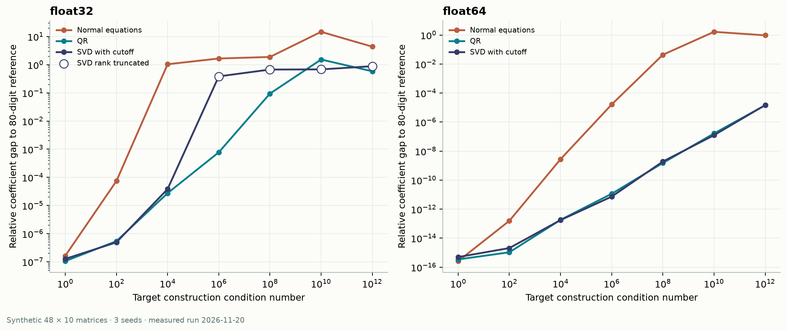
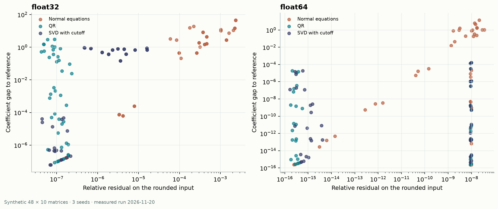
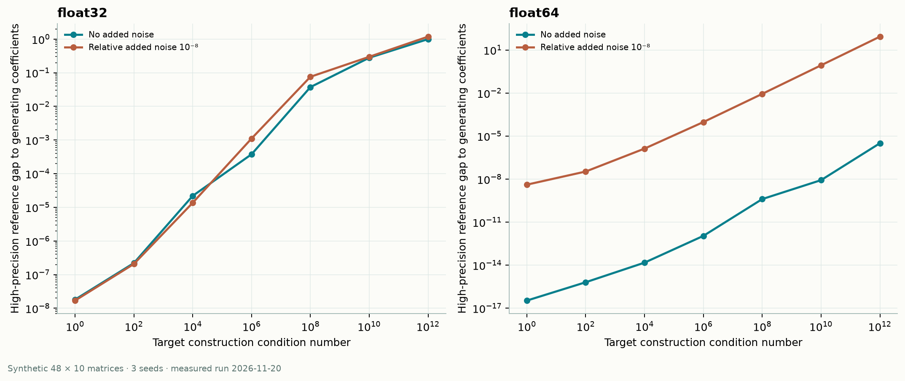
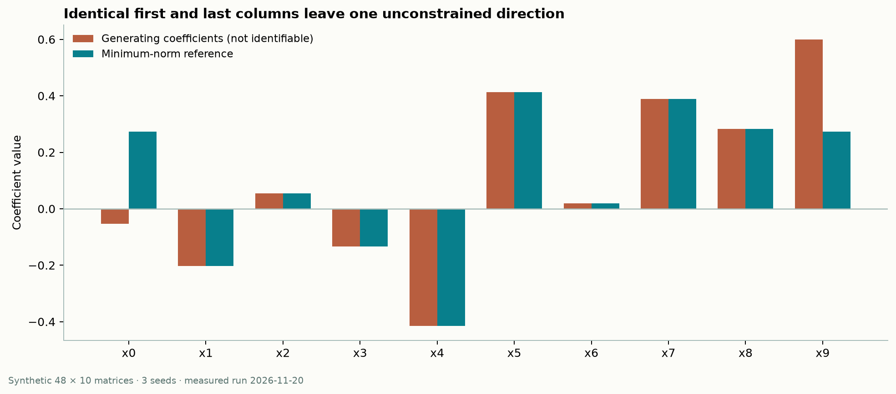

Least-squares stability lab
A small residual is not the whole answer.
Normal equations, QR and SVD are applied to the same rounded inputs. An 80-digit reference separates solver error from the information already lost to noise and finite precision.
minx ‖Ax − b‖₂ · A ∈ ℝ48×10
90stored input cases
270method measurements
80reference decimal digits
2floating-point formats
| MEDIAN RELATIVE REFERENCE GAP | FLOAT32 / TARGET κ = 10⁴ | FLOAT64 / TARGET κ = 10⁸ |
|---|
| Normal equations | 1.04 | 0.0435 |
| QR | 2.75e-05 | 1.52e-09 |
| SVD with cutoff | 3.84e-05 | 1.91e-09 |
Three seeds per configuration, no added noise in this table. These are controlled synthetic cases, not an accuracy guarantee for every matrix.
01 / Arithmetic
Compare against the problem actually stored.
Each solution is compared with high-precision QR on the exact binary values of its own A and b. SVD’s hollow markers indicate deliberate rank truncation; those gaps include a changed solution policy, not just arithmetic error.

Median across three seeds. No added noise. The horizontal axis is the construction target; observed conditioning is checked separately.
02 / Diagnostics
Inspect coefficients alongside the residual.
A small residual can coexist with a large coefficient gap when the inverse problem is ill-conditioned. These points include both noise levels and all full-rank construction cases.

Diagnostics use float64 arithmetic on the rounded input. SVD includes explicitly flagged truncated cases.
03 / Information loss
Even the reference cannot undo rounding.
The reference-to-generating-coefficients gap measures a different issue: noise and input representation have changed the problem before the solver starts.

04 / Identifiability
Rank deficiency is a modeling constraint.
With the first and last columns exactly identical, changing their coefficients by +c and −c leaves the prediction unchanged. Recovering the original pair is not a meaningful accuracy target.

Normal equations and QR explicitly reject these fixtures. SVD returns a flagged rank-9, minimum-norm solution. Equal fit does not imply unique coefficients.
05 / Reproduce and audit
The experiment is inspectable.
Inputs and policies
Three fixed seeds. Seven target condition numbers from 1 to 10¹². Two relative noise levels, 0 and 10⁻⁸. Both float32 and float64 input-output workflows. Six additional duplicate-column cases.
NumPy can promote QR/SVD internals to double before casting factors back. These are input-output workflows, not pure FP32/FP64 kernels. Reference QR runs at 80 decimal digits. SVD keeps singular values above max(m,n)·ε(dtype)·σ₁. No regularization parameter is tuned to the known answer.
python -m pip install -r requirements.txt
python scripts/run_experiment.py --out outputs/my-run
python -m unittest discover -s tests -v
Existing measurements are protected from accidental overwrite. CI creates a separate small run and checks the committed full run independently. Single-call timings are trace data, not a performance ranking.